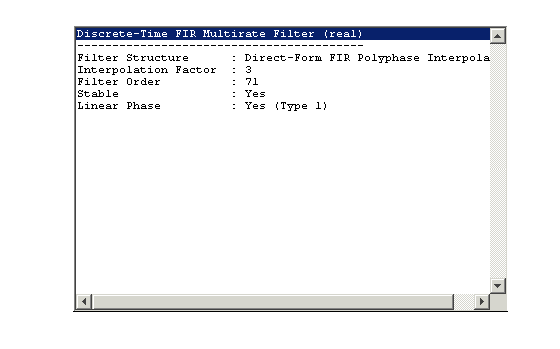
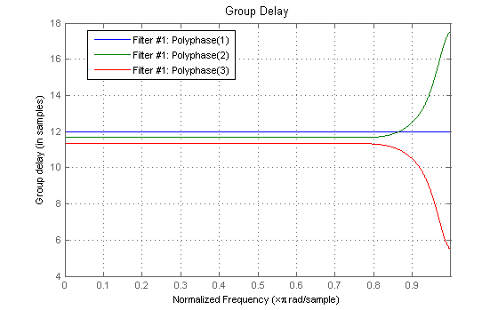
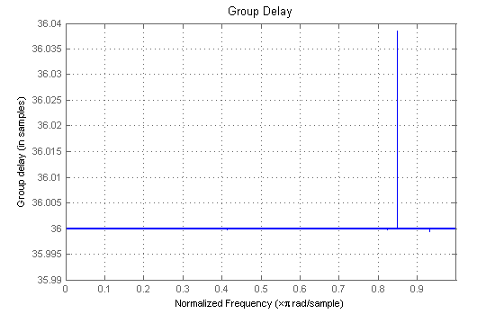
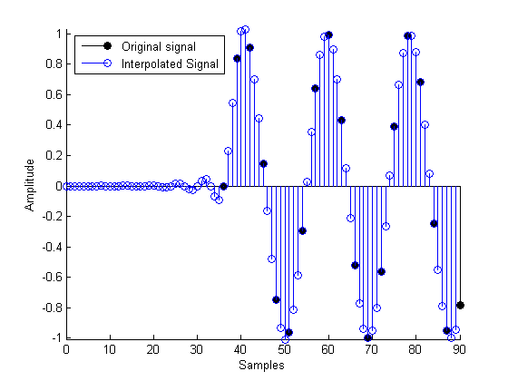
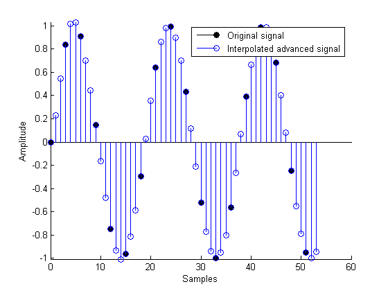
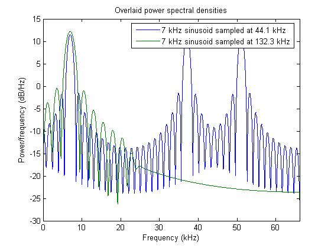

This demonstrates how to increase the sampling rate of a signal using FIR interpolators from the Filter Design Toolbox.
See also mfiltgettingstarteddemo.m
The Filter Design Toolbox supports different structures to perform interpolation including different FIR-based structures and CICs. Typing "helpwin mfilt" gives you a list of all supported structures.
L = 3; % Interpolation factor
Direct-Form FIR Polyphase Interpolator. The default filter design is a Nyquist filter with a cutoff frequency of pi/L and a gain of L. The filter coefficients stored in the Numerator property can be changed. See the FIRHALFBAND, FIRNYQUIST, FIREQINT and INTFILT functions to design interpolation filters.
h1 = mfilt.firinterp(L);
Overlap-Add FIR Polyphase Interpolator. This interpolator implements overlap-add block filtering. This algorithm is fast for filtering large chunks of data and is well suited for streaming data.
h2 = mfilt.fftfirinterp(L);
The default interpolation filter has linear phase. The info analysis in the Filter Visualization Tool (FVTool) confirms that.
hfvt = fvtool(h1, 'Analysis', 'info'); set(hfvt, 'Color', [1 1 1])
Notice that even though the interpolation filter is symmetric and thus has linear phase, the polyphase components are not necessarily symmetric and thus will not necessarily have exact linear phase. However, for each nonsymmetric polyphase filter, there is a mirror image polyphase filter which will have the exact same magnitude response with a mirror image group-delay that will compensate any phase distortion.
set(hfvt, 'PolyphaseView','on', 'Analysis', 'grpdelay','Legend','on')
The input signal x[n] is a 7 kHz sinusoid sampled at 44.1 kHz.
N = 30; Fs = 44.1e3; n = 0:N-1; x = sin(2*pi*n*7e3/Fs); % Filter with a Direct-Form FIR Polyphase Interpolator. y1 = filter(h1,x); % Filter with an Overlap-Add FIR Polyphase Interpolator. h2.BlockLength = N; % Adapt the BlockLength property to the length of the signal y2 = filter(h2,x);
For further information about the filtering options in general and how to specify initial conditions in particular, see the "Getting started with multirate filter (MFILT) objects" demo.
The group-delay of the filter, in terms of input samples is half of the filter length divided by the interpolation factor
set(hfvt, 'Filters', h1, 'PolyphaseView','off', 'Legend', 'off') % Constant group-delay delay = length(h1.Numerator)/(2*L); t = delay*L+[0:L:L*length(x)-L]; t1 = 0:length(y1)-1;
Display the output of the Direct-Form FIR Polyphase Interpolator and overlay the original signal (reference).
stem(t,x,'filled','k');hold on;stem(t1,y1); axis([0 90 -Inf Inf]) legend('Original signal','Interpolated Signal',2) xlabel('Samples'); ylabel('Amplitude'); set(gcf, 'Color', [1 1 1])
In some implementations, it is advisable to advance the input signal to compensate for the delays introduced by making the polyphase filter causal.
% Uses the States property as initial conditions next time the filter is run. h1.ResetBeforeFiltering = 'off'; % Advance the signal by exactly the group delay h1.States = [fliplr(x(1:delay)) zeros(1,delay-1)]; y1adv = filter(h1,x(delay+1:end));
Display the output of the Direct-Form FIR Polyphase Interpolator with the input signal being advanced and overlay a the original signal (reference).
x1 = x(1:end-12); t=[0:L:L*length(x1)-L]; t1 = 0:length(y1adv)-1; figure;stem(t,x1,'filled','k');hold on;stem(t1,y1adv); axis([0 60 -Inf Inf]) legend('Original signal','Interpolated advanced signal') xlabel('Samples'); ylabel('Amplitude'); set(gcf, 'Color', [1 1 1])
Notice that the transient response of the filter has been removed.
We compute the power spectral densities of both input and interpolated signal.
% Power spectrum of original signal hs = spectrum.periodogram; hs.FFTLength='UserDefined'; NFFT = 65536; hpsdin = psd(hs,L*upsample(x,L),'NFFT',NFFT,'Fs',L*Fs); % Power spectrum of interpolated signal hpsdinterp = psd(hs,y2,'NFFT',NFFT,'Fs',L*Fs);
figure,plot(hpsdin.Frequencies/1e3,10*log10(([Fs*hpsdin.Data,L*Fs*hpsdinterp.Data]))) legend('7 kHz sinusoid sampled at 44.1 kHz',... '7 kHz sinusoid sampled at 132.3 kHz') xlabel('Frequency (kHz)'); ylabel('Power/frequency (dB/Hz)'); title('Overlaid power spectral densities') axis([0 L*Fs/2e3 -30 15]); set(gcf, 'Color', [1 1 1])
As expected, the interpolation filter removes spectral replicas from the original signal.